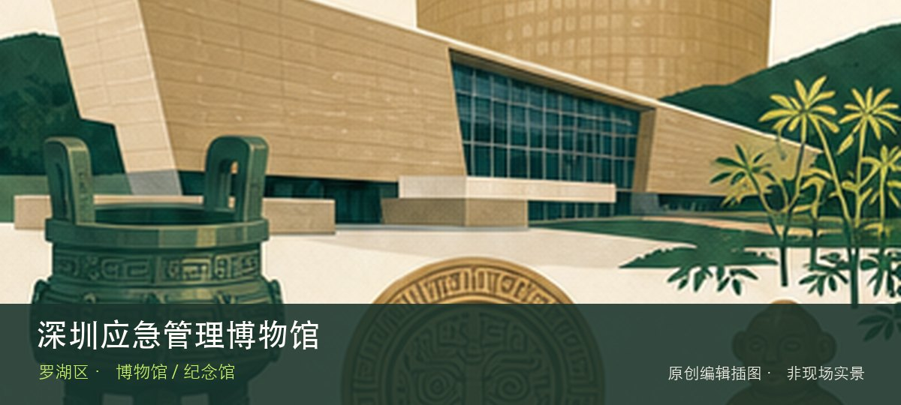

适合谁
适合亲子、学生和希望理解城市技术系统的人；预约型场馆不适合未经确认直接到场。

SHENZHEN GUIDE · 054
笋岗 · 博物馆 / 纪念馆
深圳应急管理博物馆位于笋岗，以城市灾害、生产安全和应急响应为线索，通过案例与互动展项建立风险判断，午间闭馆不等于暂停开放。从城市灾害案例转向应急响应流程时，地点的空间、历史或使用方式才会变得清楚。参观重点是通过城市灾害案例与应急响应流程理解技术如何进入城市日常，而不是只收集装置照片。预约、活动场次和可参与项目会改变体验，出发前要同时核对开放日与入场条件。
WHY GO
适合亲子、学生和希望理解城市技术系统的人；预约型场馆不适合未经确认直接到场。
避开午间闭馆时段，先看风险识别，再完成一项应急互动；活动日与团体预约以馆方公告为准。
公共交通先到笋岗片区，再以深圳应急管理博物馆公开参观入口为终点；校园、园区或预约型场馆须同时核对门禁与开放日。
自驾优先使用深圳应急管理博物馆所属建筑、园区或邻近正规公共停车场；预约时一并确认车牌登记、门岗和社会车辆准入规则。
全年可安排，高温或降雨日适合作为室内主行程；户外实验、天文和基地活动仍严格受天气影响。
NEARBY IDEAS